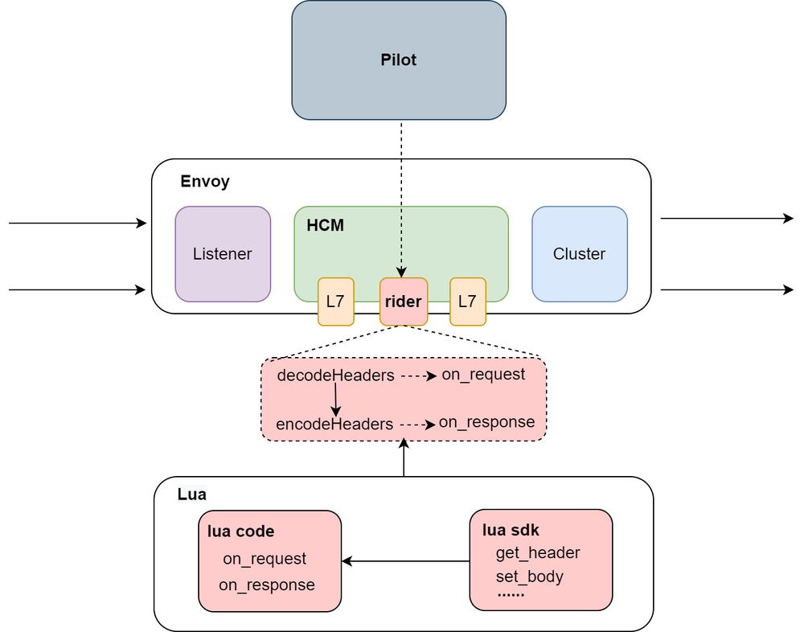

作者简介：王凯，网易数帆高级工程师，主要负责轻舟微服务、轻舟 API 网关等相关产品数据面研发、扩展增强等工作。对于数据面 Envoy 扩展增强、实践落地具备丰富的经验。
可扩展性是网络代理软件最为关键的特性之一，灵活强大的可扩展性可以大大拓展网络代理软件的能力边界。作为新兴的开源高性能网络代理软件，Envoy 本身提供了相对丰富的可扩展能力，如基于 C++ 的原生扩展，基于 WASM/Lua 的动态扩展。但是 Envoy 现有可扩展能力都各自存在其局限性。在大规模落地实践 Envoy 网关/网格过程中，网易数帆为 Envoy 实现了一套基于 Lua 的企业级自定义扩展框架-Rider，应用于轻舟微服务平台，满足业务方所需要的易开发、高性能、功能丰富等各项要求。 目前，Rider 扩展框架已经全面开源，并且被集成于开源 API 网关 Hango 当中，为 Hango 网关提供了灵活、强大、易用的自定义扩展能力。
1. Envoy 的可扩展性现状
在互联网体系下，凡是需要对外暴露的系统几乎都需要网络代理：较早出现的 HAProxy、Nginx 至今仍在流行；进入微服务时代后，功能更丰富、管控能力更强的 API 网关又成为流量入口必备组件。Envoy 因为其优异的性能、可扩展性、可观察性等优势，成为大量 API 网关的数据面选型，并且除了流量代理所需的基本功能外，Envoy 原生已经实现了很多代理所需高级功能，如高级负载均衡、熔断、限流等。因此，基于 Envoy 构建的 API 网关本身已经具备较为丰富的功能，能满足大部分应用代理的需求。但是在 API 网关的实际使用场景中，某些应用或者业务会根据自己的需求扩展出新的功能，可能是对 HTTP 的某些 Header 做些简单的处理，也可能是对接自己的 APM 等，因此 API 网关必须具备可扩展的能力以支撑应用或者业务根据自己的需求扩展相应的功能，而这个能力 Envoy 依然可以胜任，可以说基于 Envoy 实现的 API 网关的可扩展性强依赖于 Envoy 提供的可扩展能力。那么接下来我们就看一下目前 Envoy 提供的扩展机制。
1.1 原生 C++ 扩展
Envoy 通过可插拔的过滤器机制实现了原生 C++ 插件扩展的能力，如下图所示，L4 过滤器负责扩展协议代理能力及 L4 流量治理能力，L7 过滤器实现对流量的丰富治理功能。
这种扩展方式由于是 Envoy 原生提供的能力，因此性能自然是最佳的，但同时面临两个主要的问题，一个是插件开发者需要具有 C++ 语言的开发能力，另外是插件开发完后需要重新编译 Envoy 二进制文件再升级部署，无法做到插件功能的动态加载。为了解决这两个问题，Envoy 社区陆续实现了基于 Lua 和 WASM 的扩展机制，我们先看社区 Lua 扩展的原理。
1.2 社区 Lua 扩展
要想使用 Lua 语言开发原本使用 C++ 语言实现的 Envoy 插件，直观来看需要考虑以下两点：一个是 Lua 脚本如何在 Envoy 进程中执行；另一个是 Lua 脚本如何获得 Envoy 的内部数据和功能，比如 Header、Body 的获取。从这两个角度出发可以比较清晰的看一下 Envoy 社区 Lua 扩展的实现（其实 WASM 和 Rider 也是从这两个角度出发）。
如下图，和上面介绍的原生 C++ 扩展方案不同的是在 Envoy 的七层插件中多了个 Lua 插件，而这个用 C++ 开发的 Lua 插件就是回答上面两个问题的关键。首先 Lua 脚本如何在 Envoy 进程中执行，答案是通过 Lua 插件，Envoy 的 Lua 插件本身依然是用 C++ 开发的，因此可以在 Lua 插件中加载并运行 Lua 脚本；其次是 Lua 脚本如何获得 Envoy 的内部数据和功能，答案是 Lua 插件会通过 Lua CAPI 的形式提供 Envoy 内部数据和功能给 Lua 脚本。
社区 Lua 扩展一方面提供给了用户基于 Lua 语言开发插件的能力，相比 C++ 要简单很多，另一方面支持 Envoy 动态加载 Lua 脚本，无需重新编译升级。但同时由于 C++ 和 Lua 虚拟机交互带来的开销，Lua 扩展的性能自然会比原生 C++ 扩展差，而且 Envoy 社区当前的 Lua CAPI 交互方式会进一步加剧性能问题。除了性能问题，社区的 Lua 扩展还有个更大的缺陷 —— 不支持插件配置，直接导致社区 Lua 扩展的实用性大大下降。相比之下，WASM 和 Rider 实现了插件的可配置化， 并且 Rider 针对 Lua 扩展的性能做了一定的优化，使得 Rider 的 Lua 扩展在性能和功能方面都能满足企业级扩展的需求。
1.3 社区 WASM 扩展
WASM 是源自前端的技术，是为了解决日益复杂的前端 Web 应用以及有限的 JS 脚本解释性能而诞生的技术。WASM 并不是一种语言，而是字节码标准。理论上任何一种语言，都可以被编译成 WASM 字节码，然后在 WASM 虚拟机中执行。
WASM 扩展的实现原理和 Lua 扩展本质上差不多，在 Envoy 自身的四层或者七层插件中会实现一个 WASM 插件，该插件会嵌入 WASM 虚拟机用于动态加载和运行可拔插的扩展代码（被编译为 WASM 字节码），并且也会通过 WASM 虚拟机暴露获取 Envoy 内部数据和功能的接口。其原理如下图所示：
WASM 看上去似乎完美解决了 Envoy 可扩展性遇到的各种问题，它支持多语言，支持插件动态加载，同时支持插件配置，但是经过我们的测试，WASM 倒在了性能的血泊中，它基于 C++ 扩展的插件性能甚至都要比 Lua 扩展差，更不用说基于其他语言实现的插件（具体的性能对比结果会在第三部分）。
1.4 总结
如下表，我们总结了当前各种扩展性方案的特性：原生 C++ 扩展虽然性能最优，但是不支持插件的动态加载；社区 Lua 扩展支持了插件的动态加载，但是却不支持插件配置，几乎不可使用；社区 WASM 扩展既支持插件的动态加载，又支持插件配置，但是性能很差。
| 扩展方案 | 是否支持插件配置 | 是否支持动态扩展 | 性能 | 支持语言 | 开发复杂度 |
|---|---|---|---|---|---|
| 原生 C++ | 是 | 否 | 最优 | C++ | 复杂 |
| 社区 Lua | 否 | 是 | 较差 | Lua | 简单 |
| 社区 WASM | 是 | 是 | 差 | C++/Rust/Go等 | 中等 |
根据上述各种扩展性方案的优劣势，网易轻舟微服务设计并实现了自己的可扩展框架 Rider ，主要的设计目标如下：
- 支持 Lua 语言扩展
- 支持 Envoy 动态加载、更新、移除 Lua 插件
- 支持定义 Lua 插件配置
- 支持自定义 Lua 插件生效范围，网关级/项目级/路由级
- 性能优于 Envoy 社区 Lua 扩展和 WASM 扩展
接下来具体看一下 Rider 可扩展框架的设计、优化及实践。
2. Rider 可扩展框架的设计、优化及实践
2.1 早期探索
针对社区 Lua 扩展存在的性能差、不支持插件配置的问题， Rider 早期架构设计并实现了两个模块：
- Rider Filter：Rider Filter 是 Envoy 的七层插件，用于初始化和调用 Lua 代码，并且将 Envoy 内部的数据和功能通过Lua CAPI 或 FFI 接口的形式提供给 Lua SDK 调用。注意这里 Rider 利用 FFI 实现了大部分接口， 理论上性能优于基于 CAPI 实现的社区 Lua 扩展；
- Lua SDK：Lua SDK 是一个 Lua 插件代码框架，用户可以通过调用 Lua SDK 提供的 API 实现请求处理。注意 Lua SDK 提供了获取全局以及路由级插件配置的 API，使得 Rider 的 Lua 扩展支持插件配置的获取，解决了社区 Lua 扩展的大难题。
下图是整体的架构图：

尽管我们的早期架构基本满足了 Envoy 可扩展性的需求：支持多语言 Lua、支持 Lua 插件动态加载、支持 Lua 插件配置等。但是仍然存在以下几个问题：
- Rider Filter 仍然存在部分接口没有使用 FFI ，性能可能略有不足；
- Lua SDK 需要进一步完善以支持更多的插件功能开发；
- 在解决第一个问题过程中发现的 Rider 巨大性能问题。
针对这几个问题，我们进一步细化了 Rider 的架构，详细分析了 Rider 的性能，并衍生出了新的架构。
2.2 实践优化
Rider 新架构要解决的第一个问题就是试图将 FFI 进行到底，根据之前的调研，Lua 调用 C 有两种方式，一种是通过原生的 CAPI，每次调用时都会分配一个栈空间(和 Stack Frame 不同，是向 Heap 申请的一块连续内存)，通过栈空间传递参数和返回值。另一种方式是通过 Luajit 提供的 FFI 调用。FFI 的好处是，可以直接在 Lua 中调用 C 函数，使用 C 数据结构，代码可以获得 Jit 优化的 Buff，性能较原生的 Lua 有比较大的提升。因此，我们想把 Rider 中使用 CAPI 实现的接口改造成 FFI。
改造的第一步便遇到了问题，早期的 Rider 架构貌似无法使用 FFI 实现 Envoy Body 相关接口的暴露，我们先看一下早期 Rider 不得不使用原生的 CAPI 暴露 Envoy Body 相关接口的原因。早期 Rider 的架构图中 Lua Code 有两个主要的函数：on_request 和 on_response，这两个函数是 Rider 架构规定的 Lua 代码中需要实现的函数，因为 Rider Filter 在执行 Lua Code 时，Rider Filter 只会尝试从 Lua 虚拟机中获取这两个函数，然后分别在 decodeHeaders 阶段和 encodeHeaders 阶段执行，那么如果在 on_request 或者 on_response 函数中有 Body 相关的接口调用，此时 Rider Filter 还没执行到 decodeData 或者 encodeData 阶段，Body 的数据还获取不到，只能将 Lua 协程先挂起，等到 Rider Filter 执行到 decodeData 或者 encodeData 阶段时再 Resume，而这种方式 FFI 实现不了，只能通过和 Lua 虚拟机交互的方式实现。
基于上述问题，Rider 新架构在早期架构基础上进行了一些细化，如上图所示，整体架构的模块没有改变，改变的是 Rider 框架规定的 Lua 插件中需要实现的函数以及这些函数在 Rider Filter 中的执行时机。如上图所示，将原来 on_request 和 on_response 函数进一步拆分成 Header 和 Body 的阶段函数，并且在 Rider Filter 处理 Header 和 Body 阶段分别去调用，这样可以避免 Body 的处理需要挂起 Lua 协程（后来发现 WASM 的实现也是类似的细分）。因此新架构的请求处理流程如下：
- Rider 插件配置(其中包含 Lua 插件配置)作为 LDS 和 RDS 的一部分，通过 Pilot 下发；
- Envoy 对每个 HTTP 请求构造一条七层 Filter Chain, 其中包含 Rider Filter。Rider Filter 初始化时，会将 Lua SDK 模块和相应的插件从文件系统加载到 Lua VM 中；
- 在请求处理阶段，Rider Filter 会在 Decode 和 Encode 阶段分别调用 Lua 代码的 on_request_header、on_request_body 和 on_response_header、on_response_body 方法；
- 在用户 Lua 代码执行过程中，通过 Lua SDK 调用 Rider Filter 封装的相应接口，如获取，修改请求、响应信息，调用外部服务等，打印日志等。
2.2.1 性能优化
新架构设计的初衷是性能的提升，因此我们在新架构开发完第一时间便进行了性能测试，测试场景：
- 环境：本地容器环境
- 后端：Nginx 4核
- Envoy：4核
- Client：Wrk 4t 32c
- Lua 插件：调用 100 次 get_body 接口
对比实现方式：
- CAPI：Rider 的 CAPI 实现，原始的 Lua 和 C 的交互方式，通过栈空间传递参数和返回值；
- FFIOld：Rider 的早期 FFI 实现。
测试结果如下图，经典负优化，而且负的很多（当然也是因为调用了 100 次的原因），FFIOld 相比 CAPI QPS 下降了 30%。 第一想法是不是代码写的有问题，新架构引入了很多开销？所以又测试了一下 Rider 之前基于 FFIOld 实现的 Header API，性能和基于 FFIOld 实现的 Body API 差不多，那说明 FFIOld 出问题了，早期的 Rider FFI 实现的 API 可能性能都还不如 CAPI ！
于是去了解了一下 FFI 的基本原理，FFI 是 Luajit 提供的特性，Luajit 是运行 Lua 的虚拟机，和 Java 虚拟机一样，Luajit 有两种运行模式：编译模式和解释模式（编译模式的性能比解释模式好，原因感兴趣可自行查找）。Luajit 默认运行在解释模式下，在运行过程中会记录可以编译的热点代码，在之后的运行中会尝试把热点代码直接翻译成机器码执行，性能会得到提升。
回到 Rider 中来，Rider 的 Lua 插件也是运行在 Luajit 虚拟机中，并且几万的 QPS 请求一定会使 Lua 插件代码成为热点代码，那么 Luajit 会尝试把 Lua 插件翻译成机器码，同时 FFI 定义的 C 函数也会被翻译成机器码被执行，这么看起来性能确实会提升，但实际不符合预期，原因在于 Luajit 会 尝试 把热点代码翻译成机器码，尝试就可能不成功，不成功就会退化成解释模式，那么性能会大打折扣。Luajit 提供了确认程序是否运行在编译模式下的方法，在 Lua 代码的前面加上如下代码：
local verbo = require("jit.v")
verbo.start()
然后继续压测，发现 Luajit 输出如下内容：
这张图可以看出两个关键信息，一个是如果 TRACE 输出 — ，那么说明 Luajit 退出了编译模式；另一个是退出编译模式的原因是 FFI 定义的 C 函数中的某个形参类型转换不支持。接着往下定位到这个参数：
local function get_header_map_value(source, key)
local ctx = get_context_handle()
if not ctx then
error("no context")
end
if type(key) ~= "string" then
error("header name must be a string", 2)
end
local buffer = ffi_new("envoy_lua_ffi_str_t[1]")
local rc = C.envoy_http_lua_ffi_get_header_map_value(ctx, source, key, #key, buffer)
if rc ~= FFI_OK then
return nil
end
return ffi_str(buffer[0].data, buffer[0].len)
end
C.envoy_http_lua_ffi_get_header_map_value(ctx, source, key, #key, buffer) 中传入的 ctx 是 Lua 的 light userdata 类型，而 envoy_http_lua_ffi_get_header_map_value 函数声明的时候是某个类的指针类型，Luajit 在翻译的时候无法完成转换因此退出了编译模式。真相大白，接下来就是解决这个问题，具体的设计过于细节不在这里阐述，感兴趣可以移步我们的开源社区。接下来看一下优化后的效果。
首先还是接着上面的 get_body 性能测试，多加了一组 FFINew（优化后的 FFI 实现方式）的数据，如下图所示，FFINew 的性能比 FFIOld 的性能提升了 66% ，相比 CAPI 的性能提升了 16% ，FFI 的优势总算体现了出来。
上面的性能提升可能只能作为参考，毕竟是调用了 100 次 get_body 接口，因此我们针对不同复杂度的插件分别进行了简单的性能测试：
- simple filter：调用 10 次 get_header；
- normal filter：调用 20 次 set_header，调用 10 次 get_header，最后再 remove 掉这 20 个 header；
- complex filter：normal filter + 调用 30 次 get_body；
结果如下图所示，FFINew 的性能都优于 FFIOld 的性能，分别有 15% ， 22% ， 29% 的性能提升。
最后我们进一步将 Rider 和社区 WASM 和 Lua 的性能进行了对比：
- RiderOld：Rider 早期架构的实现；
- RiderNew：当前 Rider 的实现；
- WASMC++：社区 1.17 版本的 WASM 实现；
- RawLua：社区 1.17 版本的 Lua 扩展实现；
- RawC++：Envoy 原生 C++ 扩展实现；
如上图所示，Rider 的性能优于社区的 WASM 和 Lua，大概有 10% 左右的性能提升，且相比于 Envoy 原生 C++ 插件性能也只有 10% 左右的下降。这里 WASM 的插件是用 C++ SDK 实现的，而根据我们的内部测试，WASM 其他语言 SDK 实现的插件性能会更差。另外，Rider 性能只比社区 Lua 提升了不到 10%，个人感觉是因为性能测试的插件在 Lua 和 C++ 之间的数据交互比较简单，基本都是简单字符串的传递，体现不出 FFI 的优势。
2.2.2 功能增强
性能问题解决后，接下来就是功能的增强，也就是 Lua SDK 的丰富，这里总结了当前 Rider 支持的所有 Lua SDK ：
- envoy.req.get_header(name)
- envoy.req.get_header_size(name)
- envoy.req.get_header_index(name, index)
- envoy.req.get_headers()
- envoy.req.get_body()
- envoy.req.get_metadata(key, filter_name)
- envoy.req.get_dynamic_metadata(key, filter_name)
- envoy.req.get_query_parameters(max_args)
- envoy.req.set_header(name, value)
- envoy.req.set_headers(headers)
- envoy.req.clear_header(name)
- envoy.resp.get_header(name)
- envoy.resp.get_header_size(name)
- envoy.resp.get_header_index(name, index)
- envoy.resp.get_headers()
- envoy.resp.get_body()
- envoy.resp.set_header(name, value)
- envoy.resp.set_headers(headers)
- envoy.resp.clear_header(name)
- envoy.streaminfo.start_time()
- envoy.streaminfo.current_time_milliseconds()
- envoy.streaminfo.downstream_local_address()
- envoy.streaminfo.downstream_remote_address()
- envoy.streaminfo.upstream_cluster()
- envoy.streaminfo.upstream_host()
- envoy.logTrace(message)
- envoy.logDebug(message)
- envoy.logInfo(message)
- envoy.logWarn(message)
- envoy.logErr(message)
- envoy.filelog(msg)
- envoy.get_base_config()
- envoy.get_route_config()
- envoy.httpCall(cluster, headers, body, timeout)
- envoy.respond(headers, body)
2.3 Rider 的实践
网易内部传媒业务已基于 Rider 开发并上线使用多个 Lua 插件，其中用于打印全链路追踪日志的 Trace 插件 2020 Q1 上线，目前已接入全部网关，处理数十万 QPS，运行稳定。
3. Rider 可扩展框架的未来规划
未来我们会在稳定性、性能、功能等方面持续进行 Rider 的维护和优化：
- 稳定性：目前 Rider 已经在网易内外部多个业务方大规模落地，后续我们也会进一步提升并保障 Rider 稳定性；
- 性能：尽管 Rider 的性能已经优于社区 Lua 和 WASM ，但后续我们会持续进行性能优化，进一步缩小和原生 C++ 扩展的性能差距；
- 功能：在 Rider API 方面和社区 Lua 以及 WASM 对齐，提供最全面的 API 能力。
更多
- Hango Rider 项目地址：https://github.com/hango-io/rider
- Hango 网关项目地址：https://github.com/hango-io/hango-gateway